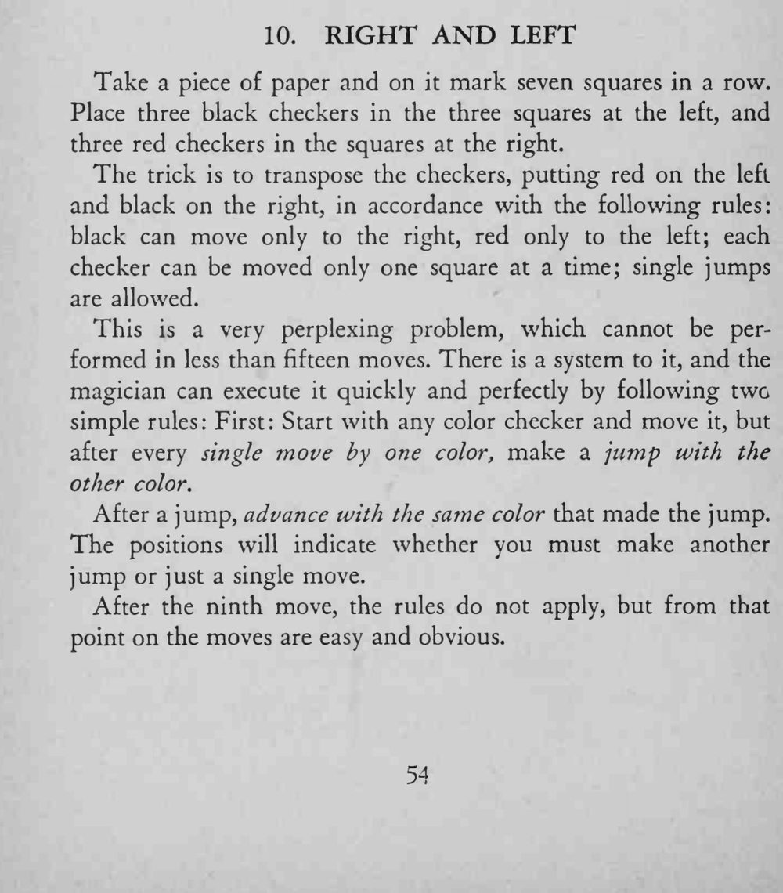

三枚黑棋在左、三枚红棋在右，中间空一格；按规则一步步移动，最后红黑两队互换了位置，看似根本做不到。
这个换位至少要十五步才能完成，先按口诀慢练，熟了再加快。

Take a piece of paper and on it mark seven squares in a row. Place three black checkers in the three squares at the left, and three red checkers in the squares at the right. The trick is to transpose the checkers, putting red on the left and black on the right, in accordance with the following rules: black can move only to the right, red only to the left; each checker can be moved only one square at a time; single jumps are allowed. This is a very perplexing problem, which cannot be performed in less than fifteen moves. There is a system to it, and the magician can execute it quickly and perfectly by following two simple rules: First: Start with any color checker and move it, but after every single move by one color, make a jump with the other color. After a jump, advance with the same color that made the jump. The positions will indicate whether you must make another jump or just a single move. After the ninth move, the rules do not apply, but from that point on the moves are easy and obvious.